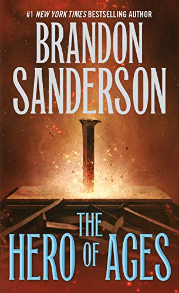

Durante mil años han caído las cenizas y nada florece. Durante mil
años los skaa han sido esclavizados y viven sumidos en un miedo inevitable. Durante mil años el Lord
Legislador reina con un poder absoluto gracias al terror, a sus poderes e inmortalidad. Le ayudan
«obligadores» e «inquisidores», junto a la poderosa magia de la «alomancia». Pero los nobles a
menudo han tenido trato sexual con jóvenes skaa y, aunque la ley lo prohíbe, algunos de sus
bastardos han sobrevivido y heredado los poderes alománticos: son los «nacidos de la bruma»
(mistborns). Ahora, Kelsier, el «superviviente», el único que ha logrado huir de los Pozos de
Hathsin, ha encontrado a Vin, una pobre chica skaa con mucha suerte... Tal vez los dos, unidos a la
rebelión que los skaa intentan desde hace mil años, logren cambiar el mundo y la atroz
dominación del Lord Legislador.
Durante mil años han caído las cenizas y nada florece. Durante mil
años los skaa han sido esclavizados y viven sumidos en un miedo inevitable. Durante mil años el Lord
Legislador reina con un poder absoluto gracias al terror, a sus poderes y a su inmortalidad.
Pero vencer y matar al Lord Legislador fue la parte sencilla. El verdadero desafío será
sobrevivir a las consecuencias de su caída. Tomar el poder tal vez resultó fácil, pero ¿qué ocurre
después?, ¿cómo se utiliza? En ese mundo de aventura épica, la estrategia política y religiosa debe
lidiar con los siempre misteriosos poderes de la alomancia...

Durante mil años los skaa han vivido esclavizados y sumidos en el
miedo al Lord Legislador, que ha reinado con un poder absoluto gracias al terror y a la poderosa
magia de la «alomancia ». Kelsier, el Superviviente, el único que ha logrado huir de los Pozos de
Hathsin, encuentra a Vin, una pobre chica skaa con mucha suerte. Los dos se unen a la rebelión que
los skaa intentan desde hace un milenio y vencen al Lord Legislador. Pero acabar con el Lord
Legislador es la parte sencilla. El verdadero desafío consistirá en sobrevivir a las consecuencias
de su caída. En El héroe de las eras se comprende el porqué de la niebla y las cenizas, las
tenebrosas acciones del Lord Legislador y la naturaleza del Pozo de la Ascensión. Vin y el Rey Elend
buscan en los últimos escondites de recursos del Lord Legislador y descubren el peligro que acecha a
la humanidad. ¿Conseguirán detenerlo a tiempo?